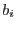
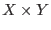
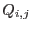
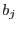
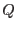

The fitting procedure will only converge to a unique solution if the components  are linearly independent. A measure of this is the quantity
If one thinks of each image as a vector in an  dimensional space, then  is the cosine of the angle between and . The task calculates  for each pair of component images and fails with an error if any is greater than 0.99. NOTE that the sums in equation 4 are carried out on unmasked pixels only. Hence components may be linearly independent in masked pixels yet still fail the test within the task.
The task also fails if any of the components has only zero-valued pixels. Finally, since the Poisson image values are necessarily all  , negative values are not allowed in the model components.
, negative values are not allowed in the model components.